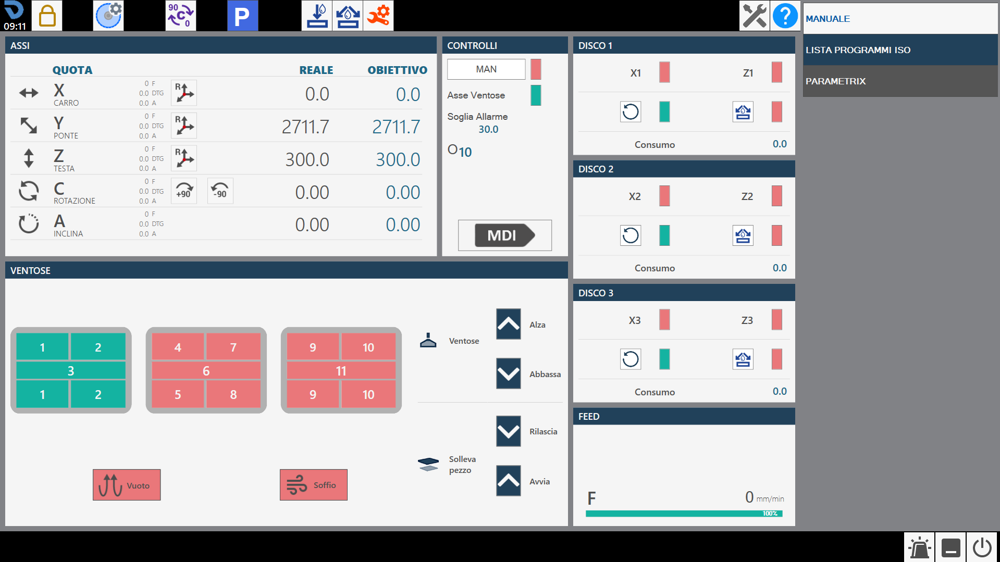
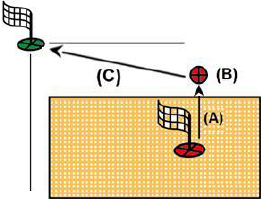
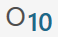
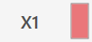
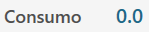

At the startup of the application, if the axes zeroing has already been executed, the following initial screen will be visible:

Warning
WARNING!When starting the machine, it is essential to pay the maximum attention in performing movements with the axes, not having undertaken the zeroing phase; collisions with the mechanical limit switches of the machine may occur and compromise its correct operation.
Parameters Allows to access to the program parameters of Parametrix.
Parameters tool By pressing the button, you access the page of the tool parameters. You are referred to the 'Tool Configuration' chapter for a detailed description of the parameters page.
Automatic rotation 0/ 90 degrees The 'C' axis is automatically moved to 0 or 90 degrees when the button is pressed.
Automatic parking When the machine is pressed, it executes an automatic move of the 'X', 'Y', 'Z', 'C' axes to zero position. The movements are carried out by the machine respecting the following order: (A) - Axis 'Z' in absolute zero position; (B) - Axis 'C' in position of 0 absolute; (C) - Axis 'X' and 'Y' simultaneously at absolute Zero position;

WARNING!To perform automatic parking, certain safety conditions must be respected:
The position of the 'A' axis must be to 0_.Make sure the movement area interested in the Location (See figure next) is free.
Zero Execute the axes reset (This operation is required when the machine is started or when the rectangular indicators are red). When the zeroing cycle is completed the indicators will be grey. The zeroing phase involves the sequential handling of the axes:
Axis Z
Axis A
Axis C
Simultaneously the X and Y axes
Axis B (Optional: Controlled lathe)
Info
NOTEThe resetting is allowed only when the encoded key is inserted in the appropriate station, identifiable on the operator console.
Turning on / Turning off internal water Pressing this button activates water from inside the tool. The signaling above the button changes the color: Green = On; Red = Off.
Turning on / Turning off external water Pressing this button water is activated of the main duct. The signal above the button changes the color: Green = On; Red = Off.
Change Tool Manual Pressing the button, the tool change procedure is started.
Maintenances Pressing this button will be visible a window containing all the maintenances of the machine. Will be visible both the maintenances to do, both those in the norm. If one maintenance requires.
Help Pressing this button will slightly change the graphics of all currently visible buttons and their behavior. It is now possible to press any button with a small question mark in the top left corner to learn the function offered by the button through a small message. To exit this help mode, simply press the 'Help' button again.
At the start of the application the preselected functionality is MANUAL. This side bar contains the following commands and programs/functions available:
In this interface are reported the values of the axes of the machine.
Example of interface element 'Axes' with origin 0 and axes zeroing already executed:
Example of interface element 'Axes' with origin 0 and axes zeroing still to be performed:
Below is the explanation of the elements that compose this section of the common interface, the elements are taken as references in the case of axes already zeroed.
Real quote: indicates the position of the axis with respect to the active origin. Objective quotas: indicates the quote to set to make the movement of the axis through the pressure of the MDI or RTCP button. F: Feed, moviment speed expressed in mm/min. DTG: Distance To Go, distance from objective. A: Ampere.
Reset Axis Pressing this button sets zero of the active origin at the point where the relative axis (X, Y or Z) is located. The operation of reset axes can be performed only on origins different from 0 (zero). To use the origin in tool coordinate (TCP) it is necessary to have set the correct measures of the mounted tool before pressing the Reset Axis button.
Automatic rotation _90 degree The position of axis 'C' is increased by 90 degrees clockwise. Example: the machine is at 12 degrees, pressing the 'Automatic rotation _90 degrees' button the machine goes to 102 degrees: 12 _ 90.
Automatic rotation -90 degree The position of axes 'C' is decremented of 90 degree in anti-clockwise sense. Example: the machine is at 102 degree, pressing the button 'Automatic rotation -90 degree' the machine moves to 12 degree: 102 - 90.
In this panel are proposed some buttons whose behavior is explained below:
MAN (Activate Manual handling) To be able to use the machine in manual is necessary position the spindle correctly and activate some functions. The button is predisposed to the aim.
Info
NOTEWhen is activated manual use, the adjacent indicator led becomes green.
Axis Suction cups Axis of reference on which the suction cups are mounted.
Ampere threshold Indicates the threshold beyond which the alarm is activated and the spindle rotation is blocked.

Selected Origin Clicking on the 'Origin' field will give the operator the possibility to modify the origin with which to work. The modification of this field triggers the update of the Axes values. The Origin values can vary from 0 to 19 included.
MDI When it is pressed, the machine performs the movement until the achievement of the quote set in the objective quote (See above). The speed of the axes X and Y is commanded by the respective potentiometers, while the other axes are commanded by the interpolated potentiometer.
Below is illustrated only one of the windows available for the operator in the management of the installed disks, because the remaining ones present analogous functionalities.

First axis of reference First reference axis for each disk (in the example X1 for DISCO1)
Info
NOTEIn the X axes positioning, it is taken as reference for the quotaobjective the center of the disk; the current quota will differ for half soul of the disk.
Second reference axis Second reference axis for each disk (in the example Z1 for DISK1)
Start/Stop spindle rotation Handles the turning on and off of the disk of the spindle to which it refers. Disk's speed is selected in tool's parameters.
Enable/Disable external spindle water Allows to manage the start and stop of water relative to the chosen tool.

Intake Indicate the current absorbed by the spindle motor.
Enable/Disable suction cups The screen shows the suction cups group viewed from above in the various zones in which is divided. Pressing on the interested area, its status is changed. If green indicates that the zone is predisposed to perform the vacuum. If red indicates that the zone is prepared for the blast.
VACUUM CUPS: LIFT - Vacuum cups parking At pressure of the button, the suction cups are made to re-enter so as to bring them in the rest/parking zone.
VACUUM CUPS: LOWER - Arrange suction cups At the pressure of the button, the suction cups are lowered from the parking area to the limit switch. It is important that the suction cups have the necessary space to fully exit.
LIFT PIECE: RELEASE - Download piece By pressing the button the Z axis is lowered until the material contacts the workbench, the vacuum pump is switched off and the blow is switched on from all the suction cups to detach the piece. After a timeout, the axis is raised to safety height.
LIFT PIECE: START - Piece raising With this command the vacuum cups are brought into contact with the material, the vacuum pump is turned on in the areas marked in green and the air in the areas marked in red, and when the vacuum switch signals that the vacuum has been generated, the axis is raised to the position set for the handling.
Warning
WARNING!Pay attention to the active suction cups making sure to use the greatest possible area to lift the piece.
Vacuum - Vacuum pump command This button turns on and off the vacuum pump. The indicator signals if the pump is on (green) or off (red).
BLOW - Command Blow The button turns on or off the puff from the vacuum cups that are not prepared for the vacuum. The indicator signals if the puff is on (green) or off (red).
Pay particular attention to the suction cups during the lifting, making sure that the areas used are sufficient to lift the piece subject to the handling. Try to always use the largest available vacuum area to effect the piece’s grip and check that there are no defects and breakage on the material that could create dangers or problems to the machine’s operation. Once turned on the vacuum pump, its turning off is allowed only through the automatic functions predisposed for the purpose. The pressure of the reset button or of the emergency mushroom has no effect on the vacuum pump that will continue to function. The turning off of the pump can be forced by means of the suitable button inside the 'Additional Commands' page. In automatic procedures, before performing the piece lifting, the vacuum status is checked through a sensor: if a sufficient vacuum value is not detected, the ‘vacuum missing’ alarm appears. The pump will continue to remain active until the vacuum sensor detects a correct value, or if it will be disabled from the ‘Additional Commands’ page.
Warning
WARNING!The lack of power supply to the vacuum pump causes a quick loss of the same and the consequent fall of the material lifted with the vacuum cups.
The bottom bar displays informative and error messages and some buttons for certain functions. The following three examples of bottom bar are proposed.
Without active alarms.
With a general emergency enabled, shown with an icon, an error code (in this case PE0000), the relative description and the alarm button on the right flashing.
With a message reported, in the example JOG direct active.
Alarms Allows the operator to access the alarms window.
Software minimization It allows the operator to exit the software page.
Machine shutdown Allows the operator to shut down definitively the machine.
The alarms page indicates the active Alarms/Messages of the system. If the machine has no active alarms the page is empty, otherwise there will be a row for each error present. In the following example page relating to alarm management and viewing, an active alarm is visible in the system: